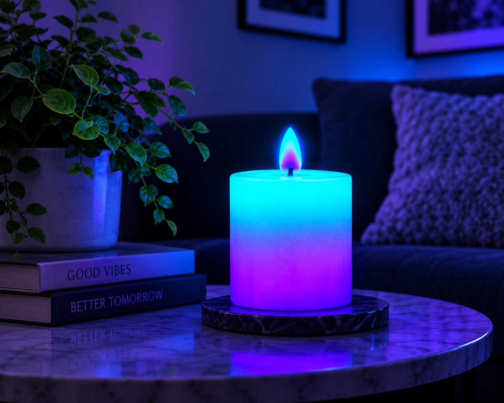

Brighten up your space with the Fluorescent Candle - a colourful twist on the traditional candle. It gives off a warm, inviting light while adding a vibrant fluorescent glow to any room. Available in a range of colours, each candle has a stylish design and a long-lasting burn time. It is simple to use and makes a striking addition to any home. Whether you are creating a relaxing atmosphere, decorating for a party, or adding a modern pop of colour to your room, the Fluorescent Candle works as both a practical light source and an eye-catching decoration. Price: £7.99 each Add colour, warmth, and personality to your home with the Fluorescent Candle.
